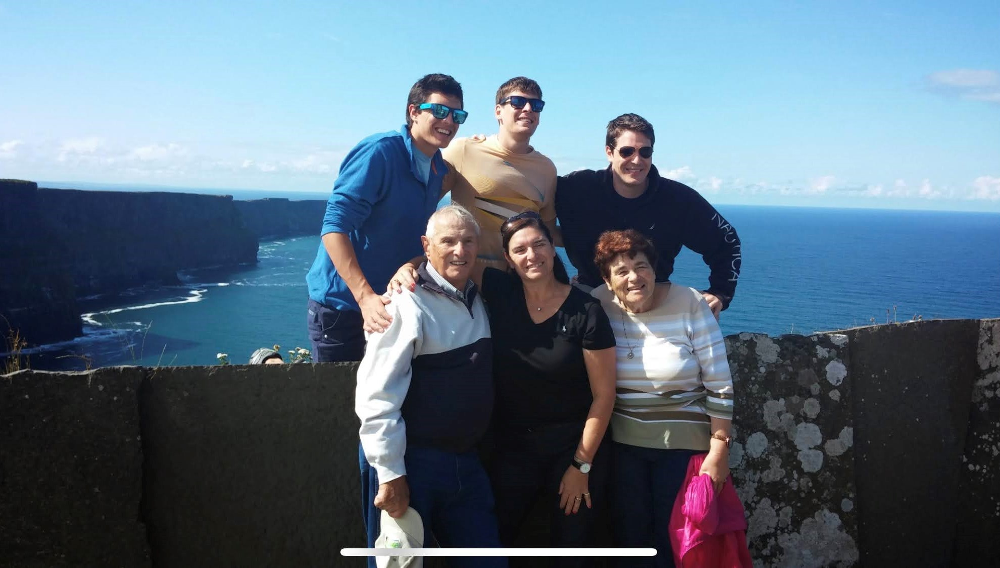
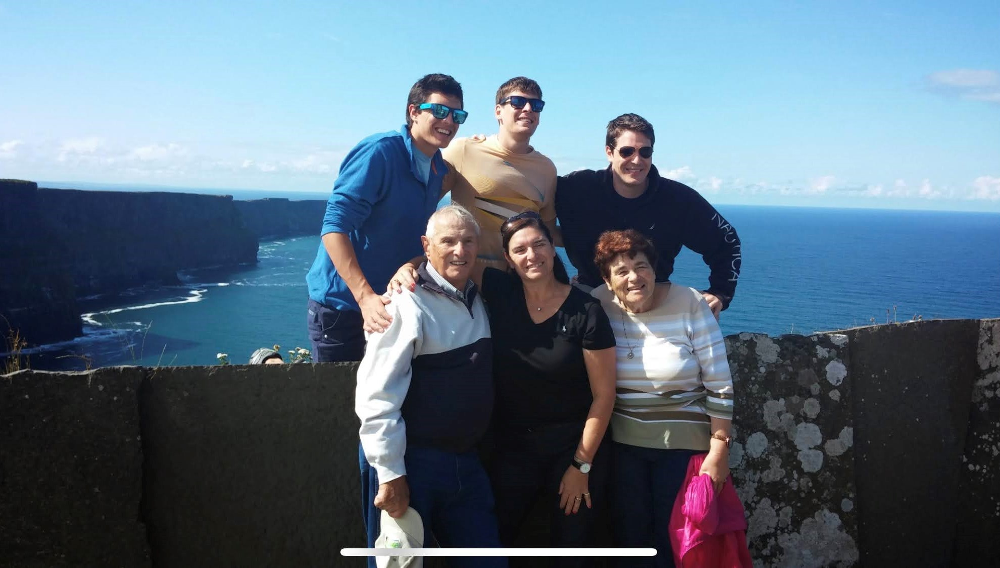

About Me
Michael Kitay, my grandfather, was born in Czychew, Poland on February 20, 1926. According to his many stories, he had a wonderful
childhood growing up with family, friends and many farm animals.
When World War II broke out in September 1939, all Jewish family life changed for the worse. A new reality reached the small town of
Czychew. Most of the neighborhood fled for their lives and Michael found himself, along with his older sister, hiding in the woods.
Survival was the new name of the game. Winters were extremely cold, searching for food fed to farm animals and hiding from the enemy
was almost impossible. Most important for Michael, was to stay alive and take care of his sister.
Once the war ended, my grandfather started a new chapter in his life in the United States of America.
He was drafted to the U.S. Army and served for two years. Later, he became a locksmith in New York City where he resided for over 60 years
together with his Israeli wife and three children.
My grandfather enjoyed life, never forgetting his roots and his past. He lived a wonderful life that he spent between New York,
Florida and Israel. He was also a true familyman and is missed by all of us.
My Photo Gallery
 X

X



My Playlist
Like The Page?
QR Code
Q&A
Question 1 - 3 Differences between web1 web2 and web3
- User Interaction and Content Creation: Web 1.0 was primarily a one-way communication system, with static HTML pages that provided information to users, while users were passive consumers of content. Web 2.0 introduced a more interactive and user-centered experience, with the rise of social media platforms and user-generated content. Users could now create and share content, comment, and participate in online discussions. Web 3.0 aims to take this interactivity to the next level by enabling seamless interactions between users and machines.
- Data Management and Artificial Intelligence: Web 1.0 was limited in its ability to collect and manage data, whereas Web 2.0 brought about the concept of "big data" and the use of analytics to make data-driven decisions. With Web 3.0, there is a greater emphasis on machine learning and artificial intelligence (AI), which enables machines to learn from and make decisions based on vast amounts of data. Web 3.0 is envisioned as a more intelligent and intuitive web, where machines can make sense of the data and provide personalized, proactive assistance to users.
- Decentralization and Security: Web 1.0 and Web 2.0 were centralized systems, with data and control largely in the hands of a few large corporations. Web 3.0, on the other hand, is being built on decentralized technologies such as blockchain, which distributes power and control among a network of users. This also makes it more secure, as it is less vulnerable to hacks and data breaches. Web 3.0 is envisioned as a more trustworthy and secure web, where users have greater control over their data and privacy.
Question 2 - Use Case Example - What reasults would I get from searching "drugs side effects" on each web
In Web 1.0, your search results would have consisted mainly of static web pages that provided information on the topic. These pages would have been text-based, with few multimedia features, and there would have been limited interaction between users and the content. You would have had to manually navigate between pages to find the information you were looking for.
In Web 2.0, your search results would have been more varied, including user-generated content such as blog posts, forum discussions, and social media interactions. You would have been able to read about others' experiences with drugs and their side effects, share your own stories, and engage in discussions with others. Additionally, the platform might have suggested targeted ads based on your search query and your online behavior.
In Web 3.0, your search experience could be even more personalized and interactive. You might use voice commands or natural language processing to ask a virtual assistant or chatbot about the side effects of a particular drug. The system might use machine learning to analyze various sources of data, such as medical records, clinical trials, and patient reviews, to provide a comprehensive and accurate response. Additionally, the system might suggest alternative treatments or lifestyle changes based on your health history and preferences.